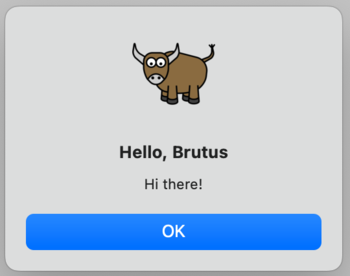
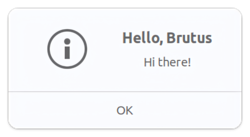
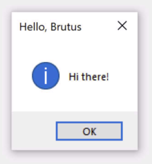

教程 4 - 更新您的應用程式¶
在上一個教程中，我們將應用程式打包為本機應用程式。如果您正在處理現實世界的應用程序，這不會是故事的結局 - 您可能會進行一些測試，發現問題，並需要進行一些更改。即使您的應用程式非常完美，您最終也會希望發布經過改進的應用程式的第 2 版。
那麼 - 當您更改程式碼時如何更新已安裝的應用程式？
更新應用程式程式碼¶
目前，當您按下按鈕時，我們的應用程式會列印到控制台。然而，GUI 應用程式不應該真正使用控制台進行輸出。他們需要使用對話框與使用者進行交流。
讓我們新增一個對話框來打招呼，而不是寫入控制台。修改say_hello回調，使其看起來像這樣:
async def say_hello(self, widget):
await self.main_window.dialog(
toga.InfoDialog(
f"Hello, {self.name_input.value}",
"Hi there!",
)
)
我們需要讓方法 async 這樣當我們顯示對話框時，應用程式的其他部分會繼續執行。現在不要太在意這個細節 - 我們會在 Tutorial
8 中做更詳細的說明。
這會指示 Toga 在按下按鈕時開啟模式對話方塊。
如果執行briefcase dev，輸入名稱，然後按按鈕，您將看到新的對話方塊：

。

。但是，如果執行briefcase run，則不會出現該對話方塊。
為什麼會這樣？那麼，"briefcase dev "的運作方式是在原地執行您的程式碼 - 它嘗試為您的程式碼製作盡可能逼真的執行環境，但它不提供或使用任何平台基礎架構來將您的程式碼包裝成應用程式。打包應用程式的部分過程包括將您的程式碼複製到應用程式包中 - 目前，您的應用程式中仍有舊程式碼。
因此 - 我們需要告訴公文包更新您的應用程序，複製新版本的代碼。我們可以透過刪除舊平台目錄並從頭開始來做到這一點。但是，Briefcase 提供了一種更簡單的方法 - 您可以更新現有捆綁應用程式的程式碼：
(beeware-venv) $ briefcase update
[helloworld] Updating application code...
Installing src/helloworld... done
[helloworld] Removing unneeded app content...
Removing unneeded app bundle content... done
[helloworld] Application updated.
(beeware-venv) $ briefcase update
[helloworld] Finalizing application configuration...
Targeting ubuntu:jammy (Vendor base debian)
Determining glibc version... done
Targeting glibc 2.35
Targeting Python3.10
[helloworld] Updating application code...
Installing src/helloworld... done
[helloworld] Removing unneeded app content...
Removing unneeded app bundle content... done
[helloworld] Application updated.
(beeware-venv) C:\...>briefcase update
[helloworld] Updating application code...
Installing src/helloworld... done
[helloworld] Removing unneeded app content...
Removing unneeded app bundle content... done
[helloworld] Application updated.
如果Briefcase找不到鷹架模板，它會自動呼叫create來產生一個新的鷹架。
現在我們已經更新了安裝程式碼，然後我們可以運行briefcase build來重新編譯應用程序，運行briefcase
run來運行更新後的應用程序，以及運行briefcase package來重新打包應用程式用於分發。
注意事項
（macOS 用戶，請記住，如 [教學 3 所述，對於本教程，我們建議使用–adhoc-sign標誌運行briefcase
package`，以避免設置代碼簽名身份的複雜性，並使教程盡可能簡單。）
一步更新並運行¶
如果您快速迭代程式碼更改，您可能需要更改程式碼、更新應用程序，然後立即重新執行您的應用程式。對於大多數目的，開發人員模式（briefcase
dev）將是進行這種快速迭代的最簡單方法；但是，如果您正在測試應用程式如何作為本機二進位檔案運行，或者尋找僅在應用程式處於打包形式時才會出現的錯誤，則可能需要重複調用briefcase
run。為了簡化更新和執行捆綁應用程式的過程，Briefcase 有一個快捷方式來支援這種使用模式 - run
命令上的-u（或--update）選項。
讓我們嘗試進行另一個更改。您可能已經注意到，如果您不在文字輸入方塊中鍵入姓名，則對話方塊將顯示 "Hello，"。讓我們再次修改 say_hello
函數來處理這種邊緣情況。
在檔案頂部的匯入和class HelloWorld定義之間，新增實用程式方法以根據已提供的名稱值產生適當的問候語：
def greeting(name):
if name:
return f"Hello, {name}"
else:
return "Hello, stranger"
然後，修改say_hello回調以使用這個新的實用方法：
async def say_hello(self, widget):
await self.main_window.dialog(
toga.InfoDialog(
greeting(self.name_input.value),
"Hi there!",
)
)
在開發模式下運行您的應用程式（使用briefcase dev）以確認新邏輯有效；然後使用一個命令更新、建置和運行應用程式：
(beeware-venv) $ briefcase run -u
[helloworld] Updating application code...
Installing src/helloworld... done
[helloworld] Removing unneeded app content...
Removing unneeded app bundle content... done
[helloworld] Application updated.
[helloworld] Building application...
...
[helloworld] Built build/helloworld/macos/app/Hello World.app
[helloworld] Starting app...
(beeware-venv) $ briefcase run -u
[helloworld] Finalizing application configuration...
Targeting ubuntu:jammy (Vendor base debian)
Determining glibc version... done
Targeting glibc 2.35
Targeting Python3.10
[helloworld] Updating application code...
Installing src/helloworld... done
[helloworld] Removing unneeded app content...
Removing unneeded app bundle content... done
[helloworld] Application updated.
[helloworld] Building application...
...
[helloworld] Built build/helloworld/linux/ubuntu/jammy/helloworld-0.0.1/usr/bin/helloworld
[helloworld] Starting app...
(beeware-venv) C:\...>briefcase run -u
[helloworld] Updating application code...
Installing src/helloworld... done
[helloworld] Removing unneeded app content...
Removing unneeded app bundle content... done
[helloworld] Application updated.
[helloworld] Starting app...
package 命令也接受-u參數，因此如果您對應用程式程式碼進行了更改並希望立即重新打包，則可以運行briefcase package -u。
下一步¶
現在，我們已經將應用程式打包以便在桌面平台上分發，並且我們已經能夠更新應用程式中的程式碼。
但是手機呢？在 教學 5，我們將把應用程式轉換為行動應用程式，並部署到裝置模擬器和手機上。